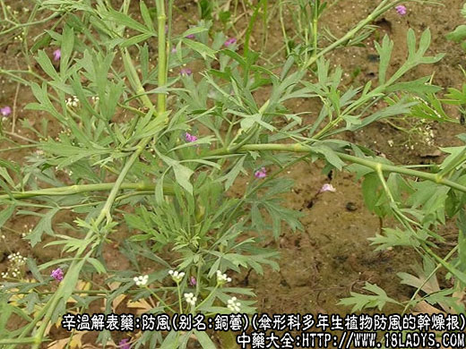
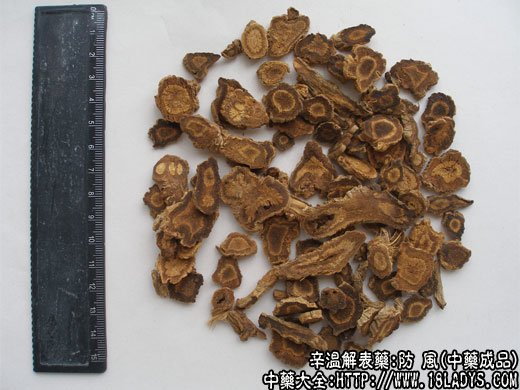
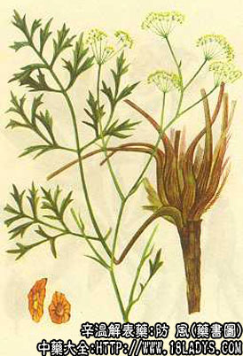

本品为常用中药。《神农本草经》列为上品。李时珍谓：防者御也，其功疗风最要，故明防风。
来源：为伞形科多年生植物防风的干燥根，均为野生。
别名：别名铜芸、回云、回草、百枝、百种。
植物形态：多年生草本，茎单一，根头部有纤维状棕黄色粗毛。根生叶有长柄，基部稍抱茎，叶片三角卵状，二回或近三回羽状分裂。茎生叶较小，生于叶鞘上。复伞形花序，顶生。花白色，双悬果。
产地：1、东防风生产于黑龙江、吉林、辽宁。
2、西防风生产与内蒙、河北。
3、水防风生产于河南郑州、洛阳汜水等地。
性状鉴别：东防风：圆锥形，长约20～50厘米，直径约1厘米。表面灰黄色或灰褐色，顶端钝尖，有密集的细环节如蚯蚓，俗称“蚯蚓头”或“旗杆顶”。细环节上带有部分黄色纤维状毛须，系叶基部残存的维管束。细环节之下多纵皱并有横长皮孔。质松脆，易折断。断面中间有黄色圆心（木质部），心外有棕色环（形成层）、最外层淡棕黄色（皮部），有裂隙。微有香气。味甘后微苦。
西防风又名口防风，形态基本与东防风相同，唯顶端环节较小，残存维管束较多（俗称扫帚头），皮色较浅，纵皱较多。断面及气味亦与东防风同。
以上两种均以根条肥大，平直，皮细质鞣糯，断面黄白色，中心色黄，显菊花心者为佳。
水防风：又名汜水防风。细长条形，弯曲不整，长约15～25厘米，直径约0.5厘米。表皮土黄色，顶端有短芦，下多纵皱。少有小歧根及微凸起的须根痕。质柔韧易折断，断面淡棕黄色，有黄色圆心，味甘。
以条长均匀，不带芦头，体柔，断面黄白色，中间有黄色花纹为佳。
主要成分：含挥发油，甘露醇。
药理作用：1、发汗解热，动物实验已证实有中等度解热作用。
2、镇痛。
3、利尿。
4、抗病毒作用，动物实验对流感病毒有抑制作用。
炮制：切片生用。
性味：辛甘温。
归经：入膀胱、肺、肝、脾经。
功能：发表散风，胜湿解痉。
主治：外感风寒或风湿所致的头痛、目眩骨节疼痛、破伤风等症。
1、用于治疗外感风寒、风热、关节和肌肉风湿。主要作用是祛风（即通过解热、发汗、镇痛等作用解除风邪引起的症状）。防风的药性较缓和，发汗力量不如麻黄、桂枝，性味的辛燥不如羌活，故称为“风药中之润剂”。
治感冒常与荆芥同用。防风与荆芥作用上的差别是：防风性较荆芥为温，且能胜湿（即治疗由湿引起的症状），故治疗风湿痹痛用防风而不用荆芥。
如外感寒邪，伤湿感冒，恶寒无汗，则配苍术，方如海藏神术汤。
2、用于治偏头痛。配白芷、川芎，尤其是体质平素虚寒而又有头痛、头晕者，或头痛与风湿有关者更适用。
3、用于止痒。常与荆芥、薄荷配用，其作用仍属祛风范畴（中医学认为痒疹也属“风”症）。
4、用于治疗痛泻（即肠鸣腹痛，泻时有痛）。中医认为这种痛泻由于肠内有“风”邪又有“湿滞”，故治疗上有防风配白术，达到祛风去湿目的，方如痛泻要方。
用量：3～9g。
处方举例：1、神术汤（王海藏）：防风6g、苍术6g、灸甘草3g、葱白9g、生姜9g，水煎服。
2、痛泻要方（《景岳全书》）：防风9g、白术9g、白芍12g、陈皮6g，水煎服。
注：除以上三种防风外，还有四川、云南、新疆等省产的不同形态的防风。如竹叶防风、竹节防风、细叶防风等，但都属于地产地销。河南的汜水防风主销中南区。东防风与口防风运销全国并出口。京津两市习销东防风和口防风两种。
西防风中常混有伞形科植物沙茴香的根（俗称白马肉），其根上粗下细，不分歧。外皮黄白色，皮质坚硬，折断有木质心，可由上部用手劈成两开。防风则不能劈开，注意鉴别。